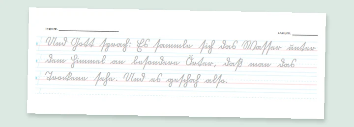
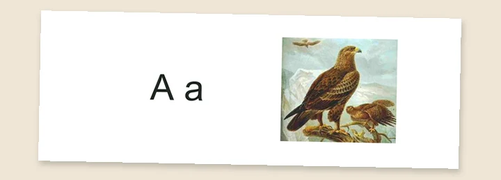
Flashcard Generator
Create flashcards →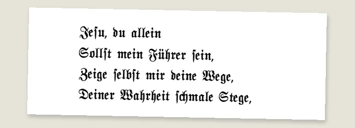
Text Converter
Convert German text for BW Hand Schrift or Fraktur.
Convert text →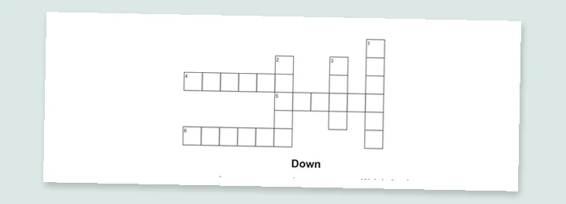
Crossword Generator
Turn a song into a missing-word crossword.
Create a crossword →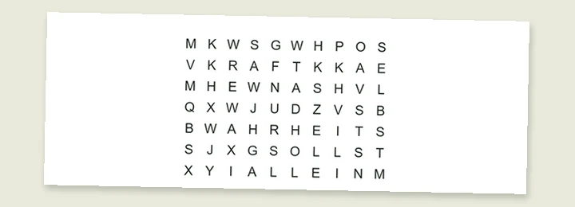
Word Search Generator
Find missing words from your song in a letter grid.
Create a word search →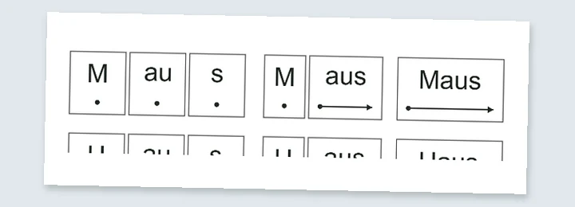
German Sound Blending
Create reading practice →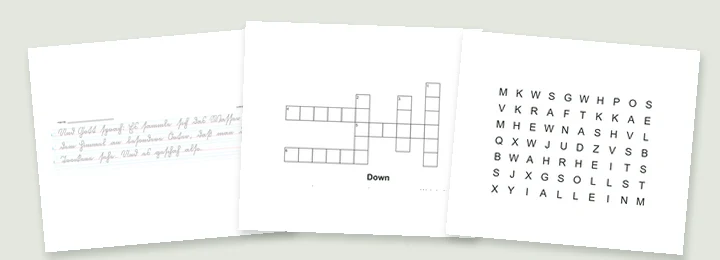
Packet Builder
Combine handwriting, a crossword, and a word search in one PDF.
Create a packet →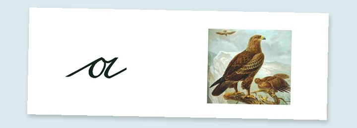
Letter Projector
Open projector →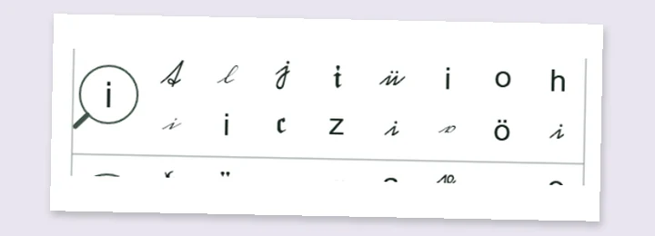
Letter Recognition
Create worksheets →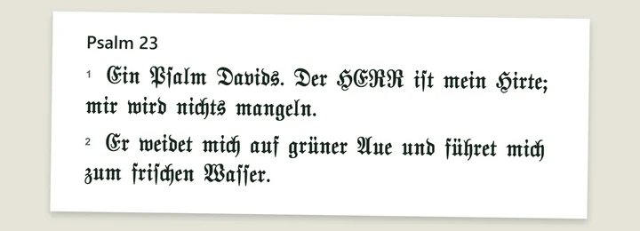
Luther Bible 1912
Read the Bible →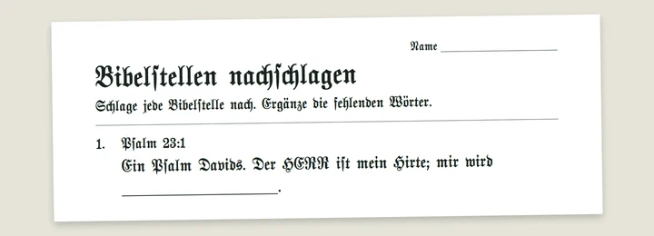